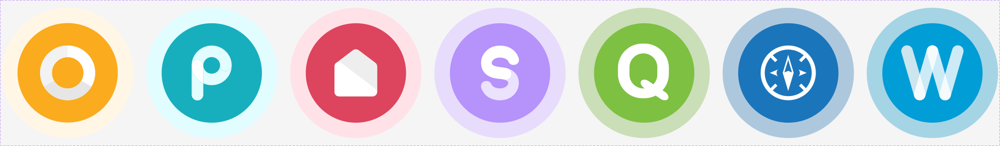

Foundations
Brand & Logos
The marks behind Stardust — the design system's own logo, the Xplor Education parent brand, and the product family it serves.
Stardust
The system's wordmark: Sora with a purple
(accent-secondary) sparkle. The sparkle alone is the app icon / favicon,
in teal (action-primary) with a purple accent.
Stardust✦
Wordmark — on light
Stardust✦
Wordmark — on dark
Icon / favicon — sparkle mark
Xplor Education
The parent brand. Stardust is the design language for Xplor Education's product suite. Use the master logos below — don't recreate them.
Horizontal lockup
Vertical lockup
Rocket icon
Product family
The Xplor Education products Stardust serves — each a circular badge: a solid colour with a soft tinted ring and a white glyph.

Office · Playground · Home · Space · Qikkids · Discover · Waitlist
Usage
- Use the supplied files. Don't redraw, re-letter, or recreate any mark.
- Don't recolour or restyle. No gradients, shadows, or outlines added to the logos.
- Keep clear space around each mark — at least the height of its icon.
- Don't stretch or rotate. Scale proportionally only.
- Mind contrast. Place each mark on a background that keeps it legible.